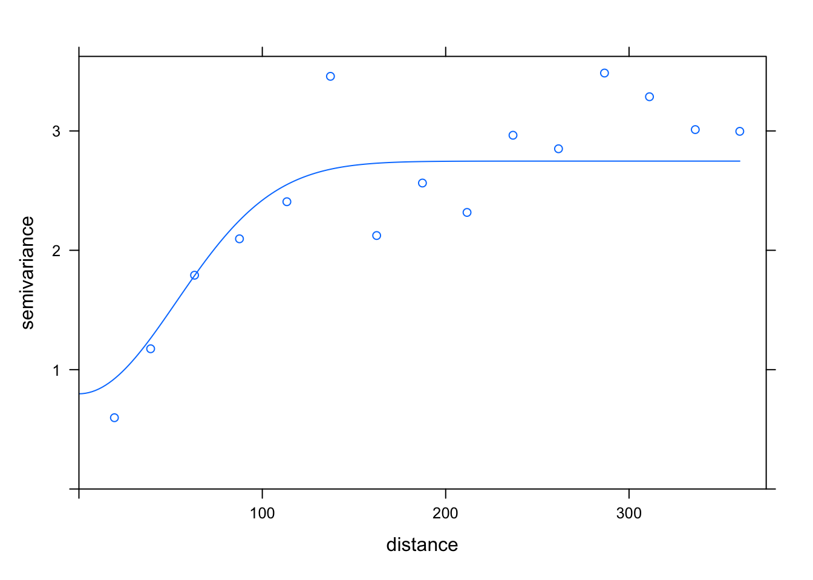
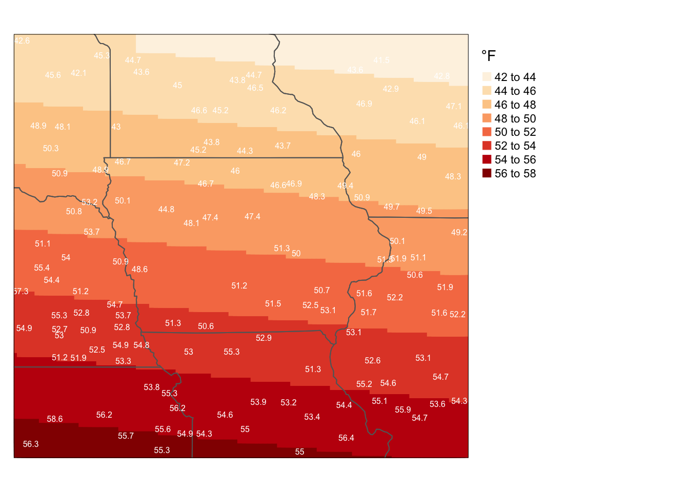

Thursday November 17, 2022
“The problem of nonparametric estimation consists in estimation, from the observations, of an unknown function belonging to a sufficiently large class of functions.” - A.B. Tsybakov
Today
- Comparing interpolation methods
- Evaluating the accuracy of the interpolation
Comparing interpolation methods
Here you consider a data set of monthly average surface air temperatures for April across the Midwest. The data are available on my website in the file MidwestTemps.txt.
Start by examining the data for spatial trends.
L <- "http://myweb.fsu.edu/jelsner/temp/data/MidwestTemps.txt"
t.sf <- readr::read_table(L, show_col_types = FALSE) |>
sf::st_as_sf(coords = c("lon", "lat"),
crs = 4326)
XY <- t.sf |>
sf::st_coordinates()
t.sf$X <- XY[, 1]
t.sf$Y <- XY[, 2]
t.sf$geometry |>
duplicated() |>
any()## [1] FALSEPlot the values on a map.
sts <- USAboundaries::us_states()
tmap::tm_shape(t.sf) +
tmap::tm_text(text = "temp",
size = .6) +
tmap::tm_shape(sts) +
tmap::tm_borders() 
There is a clear trend in the temperature field with the coolest values to the north. Besides the trend there is some local clustering of similar values (spatial autocorrelation).
Compute and plot the empirical variogram on the residuals after removing the trend. The trend term is specified in the formula as temp ~ X + Y.
library(gstat)
t.v <- variogram(temp ~ X + Y,
data = t.sf)
plot(t.v)
Check for anisotropy. Specify four directions and compute the corresponding directional variograms.
t.vd <- variogram(temp ~ X + Y,
data = t.sf,
alpha = c(0, 45, 90, 135))
df <- t.vd |>
as.data.frame() |>
dplyr::mutate(direction = factor(dir.hor))
library(ggplot2)
ggplot(data = df,
mapping = aes(x = dist, y = gamma, color = direction)) +
geom_point() +
geom_smooth(alpha = .2) +
scale_y_continuous(limits = c(0, NA)) +
ylab(expression(paste("Variogram [", gamma,"(h)]"))) +
xlab("Lag distance (h)") +
theme_minimal()## `geom_smooth()` using method = 'loess' and formula 'y ~ x'
There is no strong evidence to reject the assumption of isotropy.
Use the autofitVariogram() function to get initial estimates.
t.sp <- as(t.sf, "Spatial")
t.vm <- automap::autofitVariogram(formula = temp ~ X + Y,
input_data = t.sp)
plot(t.vm)
Set the initial parameters for a Gaussian model then fit the model.
t.vmi <- vgm(model = "Gau",
psill = 2,
range = 100,
nugget = 1)
t.vmi## model psill range
## 1 Nug 1 0
## 2 Gau 2 100t.vm <- fit.variogram(object = t.v,
model = t.vmi)## Warning in fit.variogram(object = t.v, model = t.vmi): No convergence after 200
## iterations: try different initial values?t.vm## model psill range
## 1 Nug 0.7979039 0.00000
## 2 Gau 1.9493490 74.88767plot(t.v, t.vm)
Make a grid for the interpolated values and add the coordinates as attributes.
grid.sfc <- sf::st_make_grid(t.sf,
n = c(100, 100),
what = "centers")
XY <- grid.sfc |>
sf::st_coordinates()
grid.sf <- grid.sfc |>
sf::st_as_sf() |>
dplyr::mutate(X = XY[, 1],
Y = XY[, 2])Interpolate with universal kriging.
t.int <- krige(temp ~ X + Y,
locations = t.sf,
newdata = grid.sf,
model = t.vm)## [using universal kriging]Map the output.
tmap::tm_shape(t.int) +
tmap::tm_dots(title = "°F",
shape = 15,
size = 2,
col = "var1.pred",
n = 9,
palette = "OrRd") +
tmap::tm_shape(sts) +
tmap::tm_borders() +
tmap::tm_shape(t.sf) +
tmap::tm_text("temp",
col = "white",
size = .5) +
tmap::tm_layout(legend.outside = TRUE)
The trend term captures the north-south temperature gradient and the variogram captures the local spatial autocorrelation. Together they provide the best interpolated surface.
To see this, you refit the interpolation without the variogram model.
krige(temp ~ X + Y,
locations = t.sf,
newdata = grid.sf) |>
tmap::tm_shape() +
tmap::tm_dots(title = "°F",
shape = 15,
size = 2,
col = "var1.pred",
n = 9,
palette = "OrRd") +
tmap::tm_shape(sts) +
tmap::tm_borders() +
tmap::tm_shape(t.sf) +
tmap::tm_text("temp",
col = "white",
size = .5) +
tmap::tm_layout(legend.outside = TRUE)## [ordinary or weighted least squares prediction]
The result is that the variation in temperatures is interpolated as a simple trend surface.
For another comparison, here you interpolate assuming all variation is spatial autocorrelation (no trend term). This is called ordinary kriging.
krige(temp ~ 1,
locations = t.sf,
newdata = grid.sf,
model = t.vm) |>
tmap::tm_shape() +
tmap::tm_dots(title = "°F",
shape = 15,
size = 2,
col = "var1.pred",
n = 9,
palette = "OrRd") +
tmap::tm_shape(sts) +
tmap::tm_borders() +
tmap::tm_shape(t.sf) +
tmap::tm_text("temp",
col = "white",
size = .5) +
tmap::tm_layout(legend.outside = TRUE)## [using ordinary kriging]
The result is that all variation is local autocorrelation. This produces patches of higher and lower temperatures.
The pattern obtained with ordinary kriging is similar to that obtained using inverse distance weighting. Inverse distance weighting (IDW) is a deterministic method for interpolation. The values assigned to locations are calculated with a weighted average of the values available at the known locations, where the weights are the inverse of the distance to each known location.
The krige() function does IDW when there is no trend and no variogram model given.
krige(temp ~ 1,
locations = t.sf,
newdata = grid.sf) |>
tmap::tm_shape() +
tmap::tm_dots(title = "°F",
shape = 15,
size = 2,
col = "var1.pred",
n = 9,
palette = "OrRd") +
tmap::tm_shape(sts) +
tmap::tm_borders() +
tmap::tm_shape(t.sf) +
tmap::tm_text("temp",
col = "white",
size = .5) +
tmap::tm_layout(legend.outside = TRUE)## [inverse distance weighted interpolation]
Simple kriging is ordinary kriging with a specified mean. This is done with the beta = argument.
krige(temp ~ 1,
beta = mean(t.sf$temp),
locations = t.sf,
newdata = grid.sf,
model = t.vm) |>
tmap::tm_shape() +
tmap::tm_dots(title = "°F",
shape = 15,
size = 2,
col = "var1.pred",
n = 9,
palette = "OrRd") +
tmap::tm_shape(sts) +
tmap::tm_borders() +
tmap::tm_shape(t.sf) +
tmap::tm_text("temp",
col = "white",
size = .5) +
tmap::tm_layout(legend.outside = TRUE)## [using simple kriging]
Evaluating the accuracy of the interpolation
How do you evaluate how good the interpolated surface is? If you use the variogram model to predict at the observation locations, you will get the observed values back.
For example, here you interpolate to the observation locations by setting newdata = t.sf instead of grid.sf. You then compute the correlation between the interpolated value and the observed value.
t.int2 <- krige(temp ~ X + Y,
locations = t.sf,
newdata = t.sf,
model = t.vm)## [using universal kriging]cor(t.int2$var1.pred, t.sf$temp)## [1] 1So this is not helpful.
Instead you use cross validation. Cross validation is a procedure for assessing how well a model does at predicting (interpolating) values when observations specific to the prediction are removed from the model fitting procedure. Cross validation partitions the data into two disjoint subsets and the model is fit to one subset of the data (training set) and the model is validated on the other subset (testing set).
Leave-one-out cross validation (LOOCV) uses all but one observation for fitting and the left-out observation for testing. The procedure is repeated with every observation taking turns being left out.
krige.cv(temp ~ X + Y,
locations = t.sf,
model = t.vm) |>
sf::st_drop_geometry() |>
dplyr::summarize(r = cor(var1.pred, observed),
rmse = sqrt(mean((var1.pred - observed)^2)),
mae = mean(abs(var1.pred - observed)))## r rmse mae
## 1 0.9452588 1.308603 1.027777krige.cv(temp ~ 1,
locations = t.sf,
model = t.vm) |>
sf::st_drop_geometry() |>
dplyr::summarize(r = cor(var1.pred, observed),
rmse = sqrt(mean((var1.pred - observed)^2)),
mae = mean(abs(var1.pred - observed)))## r rmse mae
## 1 0.9018904 1.903057 1.403527krige.cv(temp ~ X + Y,
locations = t.sf) |>
sf::st_drop_geometry() |>
dplyr::summarize(r = cor(var1.pred, observed),
rmse = sqrt(mean((var1.pred - observed)^2)),
mae = mean(abs(var1.pred - observed)))## r rmse mae
## 1 0.9057414 1.698922 1.351733krige.cv(temp ~ 1,
locations = t.sf) |>
sf::st_drop_geometry() |>
dplyr::summarize(r = cor(var1.pred, observed),
rmse = sqrt(mean((var1.pred - observed)^2)),
mae = mean(abs(var1.pred - observed)))## r rmse mae
## 1 0.9294513 1.785536 1.346272All four interpolations result in high correlation between observed and interpolated values that exceed .9 and root-mean-squared errors (RMSE) less than 1.8. But the universal kriging interpolation gives the highest correlation and the lowest RMSE and mean-absolute errors.
For a visual representation of the goodness of fit you plot the observed versus interpolated values from the cross validation procedure.
krige.cv(temp ~ X + Y,
locations = t.sf,
model = t.vm) |>
dplyr::rename(interpolated = var1.pred) |>
ggplot(mapping = aes(x = observed, y = interpolated)) +
geom_point() +
geom_abline(intercept = 0, slope = 1) +
geom_smooth(method = lm, color = "red") +
ylab("Interpolated temperatures (°F)") +
xlab("Observed temperatures (°F)") +
theme_minimal()## `geom_smooth()` using formula 'y ~ x'
The black line represents a perfect prediction and the red line is the best fit line when you regress the interpolated temperatures onto the observed temperatures. The fact that the two lines nearly coincide indicates the interpolation is good.
The nfold = argument, which by default is set to the number of observations and does a LOOCV, allows you to divide the data into different size folds (instead of N-1).
Note that these performance metrics are biased toward the sample of data because cross validation is done only on the interpolation (kriging) and not on the variogram model fitting.
That is, with kriging the data is used in two ways (1) to fit the variogram model, and (2) to interpolate the values.
To perform a full LOOCV you need to refit the variogram after removing the observation for which you want the interpolation.
vmi <- vgm(model = "Sph",
psill = 2,
range = 200,
nugget = 1)
int <- NULL
for(i in 1:nrow(t.sf)){
t <- t.sf[-i, ]
v <- variogram(temp ~ X + Y,
data = t)
vm <- fit.variogram(object = v,
model = vmi)
int[i] <- krige(temp ~ X + Y,
locations = t,
newdata = t[i, ],
model = vm)$var1.pred
}The interpolation error using full cross validation will always be larger than the interpolation error using a fixed variogram model.
Block cross validation
One final note about cross validation in the context of spatial data is the observations are not independent. As such it is better to create spatial areas for training separate from the spatial areas for testing.
A nice introduction to so-called ‘block’ cross validation in the context of species distribution modeling is available here https://cran.r-project.org/web/packages/blockCV/vignettes/BlockCV_for_SDM.html